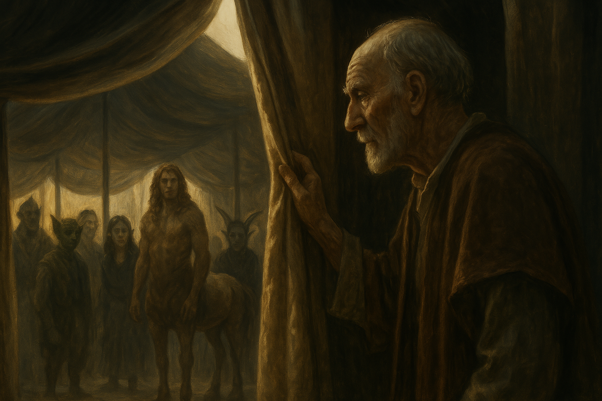

Chapter 3: Fey Senses
Mattington Shattered

Mattington Shattered
15048.11.17
充滿困惑的 Siri 和 Franz 兩人搞不清楚怎麼夥伴們都不見了，也完全不知道該怎麼辦才好。不久後，老闆又前來敲了敲門。Siri 和老闆詢問了剛剛見到的那名 Dr. White 以及夥伴消失的事。老闆簡單說明了 Dr. White 應該是把他的夥伴們傳送到了一個叫妖精荒野 (Feywild) 的時空去，不過那裡的時間和這裡的流速不太一樣。聽見了妖精荒野，Franz 表示自己和過去的冒險夥伴也曾去過那裡。
Siri 詢問老闆該怎麼去到妖精荒野？老闆表示可以到野外去碰碰運氣，但是機會極低，待在原處等 Dr. White 回來接他們過去可能比較實際一點。Siri 和 Franz 試圖補眠，兩人卻怎麼樣也睡不著覺。今晚發生的事情太多、太難以馬上消化了。
一早，老闆又來敲了敲門，給了兩人各一塊麵包，希望他們好過一點，Siri 掏錢要給老闆，但老闆表示不用。整個早上 Siri 也不敢離開房間，以免 Dr. White 回來時找不到人，但是又不知道做什麼好。在 Franz 的提議下，「看起來對拉索斯語有點天份」的 Siri 也和 Franz 開始簡單的學起了一點點的拉索斯語。
很快的來到了中午時間，老闆又拿了麵包給兩人當午餐。這次在 Siri 的強烈要求下，老闆終於收下了一枚銅幣。吃完麵包一陣子後，那道白光又出現了。這次 Siri 學乖了，不再抗拒，兩人轉瞬間消失了。
Day 1 in the Feywild
將整個房間的人傳送了的 Dr. White 看著滿臉困惑的眾人，簡單說明了這裡是個叫妖精荒野的時空，和大家平常居住的時空同時存在，但是互不干擾。在 Dr. White 的確認下，才發現似乎有人被漏掉，沒有被傳送過來，於是 Dr. White 趕緊施了點法術，化為一道白光，然後他便帶著 Siri 和 Franz 一起出現了。
Dr. White 表示他和他的群體們最少最少也有能力可以將 Midori 身上的症狀暫時中止住，甚至有可能可以將症狀解除也說不定。雖然 Dr. White 不願透露處理的任何細節，但是走投無路的 Midori 也只能碰碰運氣了。
在 Dr. White 的帶領下，眾人在這個極大的帳篷底下行走（依照 Dr. White 的估算，要從外面繞這個帳篷走，大概要兩到三個小時才能繞完一圈）。帳篷內除了妖精以外，還有其他奇幻的生物，羊蹄人、半人馬等，說的語言都是很像妖精語，但又不是妖精與的話。在 Samael 的詢問下，Dr. White 表示這種語言可以想像成是妖精荒野的普通語。懂一般妖精語的生物大概可以參透 50% 這個語言的內容，而如 Samael 這種擁有妖精血統的生物，有能力可以學會這個語言。同時，因為妖精血統的關係，Samael 也有機會可以學會穿越一般時空與妖精荒野的魔法，不過也不能保證他一定學得會。Dr. White 承諾會在處理好傷患後找人給 Samael 提點一番。
走到了一個由布幔拉起的角落，Dr. White 將簾子拉開，表示裡面是平常有人疲累時可以休息的床鋪，讓冒險者們可以在裡面睡一會兒。躺下身子，Ron 感覺到這個絲綢材質的床是他有生以來睡過最舒服的床。Dr. White 抱著 Beau，準備帶著 Midori 一起去進行治療。有點擔憂的 Siri 詢問是否能跟著去看治療是怎麼進行的。起初，Dr. White 表示有些技術他們還在嘗試中，因此希望能夠保密，並對 Siri 感到十分抱歉。想了想後，Dr. White 向 Siri 說道，也許他可以想辦法讓他一起來看看，但是為了讓 Midori 和 Beau 在最短時間內被治療，Siri 還是謝絕了 Dr. White。
帶領著 Midori，Dr. White 身上抱著熟睡的 Beau，三人走向了帳篷的另一端。路途中，Midori 看見一名披著斗篷的老人和他四目交接，接著便雙手合十，向他朝拜。Midori 不確定該怎麼做，於是也向老人回拜。看見 Dr. White 沒有特別停下腳步，Midori 便也趕緊跟上。
Dr. White 撥開了一個白色的簾幕，將 Beau 和 Midori 安置在裡頭的病床上，便暫時離開，去找他的助手。Midori 觀察了一下這裡的空間，除了至少八張以上的病床外，還有幾個上鎖的木櫃，漆成潔白色。不久後，Dr. White 帶著三名助手進來。他掏出兩顆藥丸，給 Midori 選擇：一顆是灰色的，Dr. White 表示這和一般世界的麻醉是相同的道理；另一顆是色彩閃動的，效果較好，但是不少一般世界的生物吃了以後會有出現幻覺、瘋言瘋語的副作用。Midori 決定吃下彩色的藥丸，並給 Beau 吃灰色的。逐漸的，Midori 開始失去各種感官，以及挪動身體的能力。在他閉上眼睛前一刻，他看見助手們推進了一台機器，滋滋作響的機械聲，以及身體輕微的刺痛感……
Day 2 in the Feywild
睡夢中，冒險者們似乎聽見了孩子嬉鬧的笑聲，在身邊此起彼落。Samael 也聽見了一陣腳步聲，在青草地上朝他走來，靠得很近，然後離去。
逐漸清醒的 Siri 看見自己的左側躺了一位沒看過的男性羊蹄人，正用他的雙眼看著 Siri，還舔了一下嘴唇。身為 40 年處男的 Siri 感到驚慌失措，昨晚睡得太香甜，到底發生什麼事情他不記得。大聲詢問羊蹄人，卻發現羊蹄人似乎聽不懂普通語，只回了一連串他聽不懂的話。另一端也清醒的 Ron 看著慌張的 Siri，很是滿意。接著，羊蹄人坐起了身子，將簾子拉開，泰然自若地離開了小帳篷。在足夠明亮的視線下，Ron 以及此時都已清醒的夥伴們，都看見 Siri 的臉上被用紅色的漆料畫上了羊蹄人的圖樣，而且畫得還挺難看的。依然不知道發生什麼事情的 Siri 站在小帳篷的邊界，一邊和夥伴對話，一邊盯著搖晃著屁股走遠羊蹄人。小帳篷的另一端，兩名妖精撲了進來，在床上開始忘情地翻滾，冒險者們見狀，趕緊把家當收好，離開了小帳篷。在關上簾子後，他們便聽見了小帳篷內傳出了妖精打架的聲音……
YHWH 想要找到 Dr. White，便嘗試和帳篷內可以看見的攤販們詢問，不過不管用妖精與或是普通語，都只得到攤販們疑惑的眼神，以及他完全聽不懂的回應。Samael 試圖幫忙，卻也沒有得到更多的解答。就在眾人愁眉苦展之際，Samael 感受到了自己的肩膀被拍了一下。一回頭，那人竟是他十多年前早應該往生的阿嬤。
見到早已死去的阿嬤，Samael 感到手足無措。阿嬤向 Samael 的朋友們介紹，自己的名字叫 Indigo，並說他另一手牽著的盛裝的哥布林是 Samael 的阿公。Samael 感到滿頭問號，隨後才意識到 Indigo 是在開玩笑。
Indigo 請 Samael 拿他「往生前」交付給他的魯特琴彈奏，看看他有沒有進步。聽完 Samael 的演出，Indigo 勉為其難地表示的確有進步，但是看來他的天賦可能在其他領域。
Samael 問起當初 Indigo 因病往生時，不是在大家面前嚥下最後一口氣嗎？Indigo 表示自己當初找了個替身（謎之音：替身死者）來偽裝自己的死亡，並表示自己只是開了個玩笑罷了。
YHWH 向 Indigo 詢問了不少問題，Indigo 邀請大家先來吃頓下午茶，容他好好解釋。走到了帳篷中間一處，不少圓桌擺放著，Indigo 請大家自己找椅子坐下，接著他和服務生說了幾句，服務生便端來了各種不同顏色的茶給大家喝，有綠色、藍色、紫色等，和一般世界的茶似乎不太一樣，喝起來更為清爽。接著，服務生也端來了一座點心塔，上面至少放滿了十五盤各式各樣的甜點，每盤上面都有三個小糕點。
在冒險者們新奇的品嚐茶飲與甜點時，Indigo 說明了，在這裡大家通常都是用人情作為籌碼進行交易，偶爾可能用點物品以物易物。這頓下午茶，便是 Indigo 以自己的人情付出，請冒險者們吃的。同時，Indigo 也承諾要教 Samael 以及感覺有些天賦的 YHWH 這裡的語言：Fey，後續也會嘗試讓 Samael 學習在一般世界與妖精荒野穿越的魔法。
接著，Indigo 也提到了過去這裡的大法師在一百年前曾作出的一則預言：
金屬手臂的女子與他的夥伴將劃破黑暗，帶來前所未有新紀元
鮮血將濺滿妖精荒野，未來的夢將不復存在
妖精荒野大法師
昨日，Midori、Beau 和冒險者們的到來，讓不少大帳篷內的成員們都意識到預言似乎要應驗了。
病床上，Midori 逐漸清醒。他意識到原本躺在身旁另一張病床上的 Beau 似乎消失了，趕緊用手把身體撐了起來—此時，他也發現了自己被炸掉的手好像變得不太一樣了。Midori 的左手動起來一樣靈活，但是現在已經不是肉體，而是十分精巧的機械手臂，使用起來，力道似乎變得更強大。而他原本近乎癱瘓的右手，依然維持肉體，此刻卻似乎能動起來了，不過手肘處似乎被厚厚的包紮了起來，仔細一聽，還能聽到金屬關節的運轉聲。Midori 看見站在診療間的一名助手，便試圖透過比手畫腳的方式和他溝通，助手見狀點了點頭，便離開了。
等了好一陣子，Midori 沒有看見任何人回來，便自己站了起來，離開了診療間。他看見前方不遠處有另一名助手，便朝他走了過去—此時，Midori 也發現自己的步伐變得更為輕盈，跑起來更快了。Midori 向那名助手說了 Dr. White，助手便帶他到帳篷的一側去。在那裡，Dr. White 正在和 Beau 談天著。Beau 看起來開心無比，而他的右手，也和 Midori 一樣是金屬材質的了。Beau 看見 Midori，開心的跑了過來，緊緊抱住 Midori。Midori 感受到 Beau 金屬手臂的力道又比以前更強大了。Midori 和 Dr. White 道謝，同時也看見了越來越多大帳篷內的群眾朝著他們圍了過來，雙手合十，向著他們朝拜。
Midori 問起 Dr. White 這是怎麼回事。Dr. White 表示過去妖精荒野的大法師曾做出了一個預言，而他的預言從來沒有失準過：「金屬手臂的女子與他的夥伴將劃破黑暗，帶來前所未有新紀元」。此刻，Midori 和 Beau 兩人都是金屬手臂的女子，因此，他們兩人都被群眾們認為是大帳篷的救世主。Midori 想去見見這名大法師，不過 Dr. White 表示先讓他們倆去見見他們的夥伴，也填一填肚子。
來到下午茶的桌子旁，Dr. White 拉了額外的幾張椅子，讓 Midori、Beau 一銅加入夥伴們，他也另外向服務生叫了一個新的點心塔以及幾杯茶。見到 Ron，Beau 開心地告訴他現在自己揮拳揮得更厲害了，便一拳朝 Ron 的肚子揮了下去，十分疼痛。
在 Dr. White 的說明下，在這裡，人們稱呼他用的是不一樣的名字，這名字不太容易發音，但是如果用一般世界的說法，可以稱為 Elby，這裡的人也能聽得懂這個名字。如果之後需要找他或 Indigo，只要向大帳篷內的人說他們的名字，他們就會幫忙找到人。
冒險者們也向兩人詢問了有關這裡對拉索斯教的認識。Indigo 表示拉索斯教利用拉茲特獸的毛皮製作斗篷的技術是從他們這裡偷渡出去的，不過這裡的拉茲特獸是野生的，而且他們都等拉茲特獸老死後，才取用他們的毛皮。在 YHWH 的央求下，Indigo 表示會幫他們拿個幾件斗篷送給他們。
Elby 也表示雖然大帳篷內沒有感受到拉索斯教的惡意，但是過去的確有過拉索斯教吸收這裡的人作為間諜，因此千萬得小心。
吃飽喝足後，大家前往大法師的攤位。在 Elby 的引薦下，不會說普通語的大法師對 Midori 和 Beau 做了占卜。首先，大法師向 Midori 表示，他的未來會很辛苦，但是如果他能撐過去，他的名字註定會留在歷史中。而對 Beau，大法師表示他的命運和妖精荒野綁在一起，是非常重要的人。Midori 詢問為何這名人類會和妖精荒野有這麼多連結？大法師感受了一下 Beau 的手，便表示他的祖先如果不是有 Fey 的血脈，就是有被 Fey 祝福過。Midori 也詢問，如果他們兩人當中有一人注定是妖精荒野的救世主，要怎麼去區分？Elby 表示需要經過一場試煉，才能作出較為精準的判斷。而在 Midori 的同意下，Elby 表示隔日早上可以為他們兩人進行這場試煉。
看見了 Midori 和 Beau 的金屬手臂，感到非常羨慕的 Ron 向大法師詢問，自己能不能也有一支金屬手臂，但是不管他怎麼詢問，都得到大法師的否決，或甚至問題被忽略。最終他賠上了九管治療藥水以及一大塊起司，只得到了大法師表示今晚晚餐加菜的答案，令他感到十分氣餒。
Franz 也向大法師詢問，自己對拉索斯教的了解，能否幫到妖精荒野什麼忙？大法師表示幫忙當然是好的，但是妖精荒野的命運掌握在救世主的手上，他做的事不會改變世界的走向。
在眾人都詢問完想問的問題後，Indigo 帶著 YHWH 和 Samael 兩人，以及他的哥布林，先行離開。其他人則跟著 Elby 來到了帳篷的正中心—一棵大樹。大樹上掛著不少線，下面垂著紙條，Elby 表示這是大帳篷成員們的祈願。接著，Elby 走向大樹，將手掌放在上面，身體稍微震了一下。他向冒險者們表示，這棵樹可以讓他們回想起一些過去的事。
Ron 走了過去，觸摸了樹，一瞬間看見了樹的兩側各有一具屍體。
Siri 拿起他的綴飾，貼著樹，他想起了當時得到這個綴飾的過程。
Midori 表示自己還沒去看過他們昨晚休息的營帳，於是 Elby 便帶著大家走到營帳前。此時，營帳內傳出了謎樣的嬉鬧聲。在討論後，大家決定晚點再過來。不過，Elby 也表示大家平常都會共用這個營帳來睡覺，他自己也會使用，因此要大家有點心理準備。
另一方面，Samael 和 YHWH 跟著 Indigo，來到了 Indigo 自己的空間。Indigo 和哥布林說了幾句話後，哥布林便先離開了。兩人花了一些時間，對 Fey 的語言有了初步的認識，開始可以聽得懂比較多內容，但還不太會說。
接著，Indigo 和兩人確認了他們是否想要學習在妖精荒野與一般時空穿越的能力，Samael 表示他有意願，而 YHWH 在聽聞了沒有妖精血統的生物這樣穿越時可能有記憶出問題的風險後，便決定不學習了。
在 Indigo 的帶領下，Samael 握著他的阿嬤的手，看見 Indigo 口中念念有詞，接著兩人便穿越回到了一般世界的 Dorrenville。Samael 感受到距離不久前離開的這裡，天氣明顯變冷了。在 Indigo 的邀約下，兩人閒逛了一下，Samael 發現 Speedy 和馬車都不見了，但是勇哥依然還在，只是看起來又更虛弱了。Samael 也看見了酒館老闆剛好離開酒館，但還是決定不要上前攀談。接著，Indigo 變牽起 Samael 的手，念了一串不一樣的咒語，另一手抓住一些從妖精荒野帶來的植物穿越回了妖精荒野。穿越完的 Indigo 明顯看起來有點疲倦。
接著，Samael 在 Indigo 的陪伴下，如法炮製，也進行了一次穿越，十分成功。然而，在回來的這趟，Samael 卻無法成功穿越。Indigo 便再一次帶著 Samael，成功穿越回到妖精荒野。不過可以很明顯的看見，Indigo 十分疲憊。
一旁休息的 YHWH 則握住了他新取得的項鍊，試圖和住在裡面的 Domneil 進行溝通。和 Domneil 對話後，YHWH 似乎得到了不少有用的資訊，而 Domneil 也期許 YHWH 可以好好的在這裡做有趣的事。
在眾人相會後，大家也陪著 YHWH 和 Samael 一起到帳篷中心的大樹（這裡的人稱它為中心樹 the Center Tree），嘗試喚起回憶。在 Elby 的說明下，這棵樹除了讓觸摸的人取得回憶（除了自己的回憶，甚至是在自己出生前的回憶），也同時是妖精荒野存取集體知識的寶庫，雖然有些內容會被刻意的封鎖住。同時，觸摸者也能對樹提出問題，從中嘗試取得答案。
因為有些人先前在觸碰樹時沒有得到任何回應，幾位冒險者在 Elby 的協助下，再度觸摸中心樹。這一次，他們明顯感應到更明確的東西了。Midori 看見了過去如姊姊般的 Yuki 正在和他道別；而 Ron 則聽到了一個他很肯定自己聽過的聲音，說著他聽不懂的語言。Ron 清醒後，嘗試復述他聽到的那段話，而 Siri 似乎有印象自己聽過這樣的語言。再次嘗試後，Ron 聽見了同一個聲音，喚著他今晚在這裡等他。
眾人決定先去吃晚餐。在 Indigo 與 Elby 的帶領下，大家走到了一個小布簾內，在圓桌旁各自拉了椅子。不久後，有人端了一大鍋食物來，仔細一看，裡面是濃郁的起士火鍋，而起士的來源，想必就是 Ron 為了求金屬手臂，獻給大法師的食材。眾人大快朵頤了起來，連酷爆都吃的津津有味。不久後，大法師也走入了簾子內，加入大家一起享用晚餐。
吃飽後，YHWH 和 Ron 決定再去一次中心樹，其他人則回到休息區睡覺。終於發現自己臉上被畫上橘紅色塗鴉的 Siri，趕緊找了水將臉洗淨。在洗臉的噴泉旁，他看見了一支橘紅色的蠟筆，丟在地上，於是他趕緊將蠟筆收了下來。
YHWH 試圖從中心樹讀取和闖入妖精荒野的拉索斯教信徒有關的資訊，他看見了幾百年前，一名與其他人幾無相差的人被整個妖精荒野的群眾架起並拷問，但是他後來去了哪裡？被問了什麼問題？都像是被隱藏起來了一樣。詢問過 Elby 後，YHWH 只知道這人現在被囚禁了起來，但 Elby 也不願透露他被關押在哪裡。看著坐在地上打坐的 Ron，YHWH 決定先回去睡覺了。
Ron 靜靜打坐著，不知道何時會等到那位身分不明的人。在他快睡著之際，他聽見了一陣重重的腳步聲向他走近，他感受到盤著的腿上被放了一個重物，然後腳步聲逐漸離去。那聲音在他腦中說著「這是你跟神要到的」。
Ron 睜開眼，看見腿上放了一個用牛皮紙包覆起來，長長的東西。輕輕打開，一個玻璃容器，裝著一隻乾枯的手。雖然不是金屬的手，但 Ron 從它的表面感受到了無法想像的強大魔法能量。摸著這隻手，一陣不屬於他的記憶衝入他的腦中，過去很多人將自己的手砍斷，將這隻手接上，換得了極為強大的力量。而最早最早，這隻手的主人，似乎是一隻巫妖。
Ron 興奮的跑回大家睡覺的帳篷，喚醒了 Midori，要請 Midori 用他的巨斧幫他把右手砍斷，以接上這隻來路不明的手。兩人的討論引起了還沒睡著的 Siri 的注意。三人決定先離開帳篷，再進行討論。Siri 認為這東西看起來有幾分邪惡的氣味，但是在 Midori 的感應下，沒有感知到什麼奇怪之處。Ron 成功說服了 Midori 幫助他，但 Siri 還是非常不放心，於是三人先去了 Elby 的手術室，Siri 再去找 Elby，請他幫忙評估，甚至動手術。
Elby 了解了狀況後，來到手術室，和 Ron 溝通。他不拒絕幫 Ron 把手臂砍斷，但是是否要接上這隻手，那就是要交給 Ron 做決定的了。餵了 Ron 劑量不大的麻藥後，Elby 用了各種工具，透過精細的手術，將 Ron 的肌膚切開，然後把骨頭砍斷。接著，Ron 用自己的左手，把那隻手接上他斷開的右手。肌膚很快地就癒合在一起，Ron 甚至能像使用自己的手一樣，輕鬆的操控他。原本乾枯的表皮，像是注入了藥物一般，瞬間充滿了血色，變得強壯，甚至連青筋都爆了出來。在感謝過 Elby 後，Ron 和兩位夥伴便回到帳篷睡覺去了。
夜裡，Siri 看見大家都睡著了，便偷偷摸摸地拿起他撿到的蠟筆，在大家的臉上開始塗鴉，當中只有 Beau 和 Midori 被放過了。在爬到床的另一側時，他看見了那位羊蹄人，對著他笑。Siri 對羊蹄人的惡作劇感到十分欣賞。羊蹄人接著從口袋拿出了另一隻紫色的蠟筆，開始在 Siri 的創作上加工。完工後，羊蹄人從口袋拿出了一整組 12 色的蠟筆，想要送給 Siri 作為禮物，Siri 也欣然接受了，拿出了自己身上的東西做為交換。